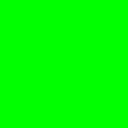

V následujících třech dílech našeho tutoriálu si ukážeme základy rendrování ve Vulkan API. Dnes vytvoříme základní pipeline, nastavíme barvu pozadí a výsledek uložíme do souboru.
Mnoho lidí by možná čekalo, že naše první rendrovací aplikace bude o otevření jednoduchého vulkanního okna. Nebude tak. Inicializace okna a rendrování do něj vyžaduje práci s Vulkan extensions (rozšířeními), s ukazateli na funkce a s konfigurací swapchainu. I kdybychom chtěli projít těmito složitostmi, získali bychom prázdné okno s tím, že bychom stejně stáli před úkolem naučit se do něj rendrovat. My se místo toho nejprve naučíme rendrovat. A až porozumíme procesu rendrování, otevřeme tématiku, jak otevřít okno a jak v něm prezentovat výsledek rendrování. Do té doby si budeme výsledný obrázek ukládat do souboru.
Aplikaci si můžeme stáhnout a otevřít si zdroják main.cpp. Těm, kteří si aplikaci ihned zkompilují a spustí a náhodou jim nebude fungovat, odkazuji už teď na závěr tohoto dílu, kde si popíšeme, co se stalo, a že v rámci udržení rozumné velikosti tohoto dílu doplníme chybějící části až příště.
Nicméně zpět k main.cpp. Hned na začátku najdeme seznam proměnných, z nichž některé již známe. Stále platí, že pořadí proměnných udává pořadí zavolání jejich destruktorů, takže je nemůžeme úplně volně prohazovat.
// constants static const vk::Extent2D imageExtent(128,128); // Vulkan instance // (it must be destructed as the last one) static vk::UniqueInstance instance; // Vulkan handles and objects // (they need to be placed in particular (not arbitrary) order // because they are destructed from the last one to the first one) static vk::PhysicalDevice physicalDevice; static uint32_t graphicsQueueFamily; static vk::UniqueDevice device; static vk::Queue graphicsQueue; static vk::UniqueRenderPass renderPass; static vk::UniqueImage framebufferImage; static vk::UniqueDeviceMemory framebufferImageMemory; static vk::UniqueImageView frameImageView; static vk::UniqueFramebuffer framebuffer; static vk::UniqueCommandPool commandPool; static vk::UniqueCommandBuffer commandBuffer; static vk::UniqueFence renderingFinishedFence;
Mezi proměnné, které přibyly, patří imageExtent, renderPass, framebufferImage, framebufferImageMemory, frameImageView a framebuffer. V tomto díle se tedy zaměříme na ně a přeskočíme kód, který již známe z dřívějška. Minule jsme vytvořili Instanci, pak jsme si z dostupných fyzických zařízení vybrali první odpovídající našim požadavkům, následně jsme si vytvořili logické zařízení a z něj získali grafickou frontu. Po ní v tomto díle následuje vytvoření render pasu.
Render pass - vágně řečeno - popisuje, kam se bude rendrovat, odkud se bude číst a jaké jsou vztahy mezi subpasy. Mezi informacemi kolem render pasu vyniká klíčové slovo attachment, v překladu něco jako "to, co je připojeno". Pod attachmentem si můžeme představit například color buffer nebo depth buffer, do kterých rendrujeme. A proč to zmiňuji? Protože při vytváření render pasu potřebujeme popsat attachmenty, se kterými render pass pracuje.
Render pass vytvoříme takto:
// render pass
renderPass =
device->createRenderPassUnique(
vk::RenderPassCreateInfo(
vk::RenderPassCreateFlags(), // flags
1, // attachmentCount
array{ // pAttachments
vk::AttachmentDescription(
vk::AttachmentDescriptionFlags(), // flags
vk::Format::eR8G8B8A8Unorm, // format
vk::SampleCountFlagBits::e1, // samples
vk::AttachmentLoadOp::eClear, // loadOp
vk::AttachmentStoreOp::eStore, // storeOp
vk::AttachmentLoadOp::eDontCare, // stencilLoadOp
vk::AttachmentStoreOp::eDontCare, // stencilStoreOp
vk::ImageLayout::eUndefined, // initialLayout
vk::ImageLayout::eGeneral // finalLayout
)
}.data(),
1, // subpassCount
array{ // pSubpasses
vk::SubpassDescription(
vk::SubpassDescriptionFlags(), // flags
vk::PipelineBindPoint::eGraphics, // pipelineBindPoint
0, // inputAttachmentCount
nullptr, // pInputAttachments
1, // colorAttachmentCount
array{ // pColorAttachments
vk::AttachmentReference(
0, // attachment
vk::ImageLayout::eColorAttachmentOptimal // layout
),
}.data(),
nullptr, // pResolveAttachments
nullptr, // pDepthStencilAttachment
0, // preserveAttachmentCount
nullptr // pPreserveAttachments
)
}.data(),
0, // dependencyCount
nullptr // pDependencies
)
);
První parametr konstruktoru vk::RenderPassCreateInfo je flags. Ten necháme prázdný. Následuje počet attachmentů. My zvolíme jeden. Další parametr pAttachments je ukazatel na pole attachmentů. Protože my máme jen jeden attachment, je zde jedná struktura vk::AttachmentDescription. AttachmentDescription znamená česky popis attachmentu. A jak je tedy attachment popsán?
AttachmentDescription obsahuje položku flags, kterou necháme prázdnou. Dále formát udávající, jak jsou data v attachmentu uložena. My zvolíme eR8G8B8A8Unorm, což je 8 bitů pro každou RGBA složku, tedy dohromady 32 bitů či 4 bajty. U v názvu pak značí unsigned, tedy bez znaménka. Rozsah hodnot je tedy 0 až 255 pro každou z RGBA složek. Norm pak značí, že rozsah 0 až 255 bude převeden na číslo s plovoucí desetinou čárkou s rozsahem od nuly do jedné. Více detailů najdeme ve Vulkan dokumentaci, zvláště pak v sekci věnované VkFormat (v současné verzi dokumentace je to kapitola nazvaná Formats) a v sekci věnované numerickým konverzím (Conversion from Normalized Fixed-Point to Floating-Point, či celá sekce Fixed-Point Data Conversions). Další často používané formáty jsou například eB8G8R8A8Unorm, či sRGB ekvivalenty obou předchozích, tedy eR8G8B8A8Srgb a eB8G8R8A8Srgb.
Další parametr je počet samplů na obrazovkový bod. Pro multisampling bychom zvolili například e4, neboť grafické karty byly kdysi optimalizovány, aby zvládly čtyři samply na bod bez nějakého radikálního poklesu výkonu.
Parametry loadOp a storeOp optimalizují práci s pamětí. Jejich význam vyniká například při tiled renderingu, kdy hardware interně nerendruje naráz celý výsledný obrázek. Místo toho je výsledný obraz rozdělen do dlaždic a rendering probíhá po dlaždicích. Typicky průběh začíná načtením dlaždice z paměti grafické karty do interní cache grafického čipu. Následuje rendering bez nutnosti přístupu do paměti attachmentu, a vše končí uložením dlaždice z interní cache zpět do paměti. Takováto hardwarová architektura může přinášet podstatné zvýšení výkonu, neboť se rendruje do interní cache bez nutnosti přístupu do samotné paměti.
Parametr loadOp nám umožňuje zoptimalizovat přístup do paměti na začátku render pasu. Nejdražší nastavení je eLoad, které znamená, že z paměti opravdu načteme její obsah. Hodnota eClear, kterou použijeme my, využívá faktu, že obsah obrazovky chceme vyplnit barvou pozadí. Místo přístupu do paměti tedy vezmeme rovnou barvu pozadí a ušetříme přístup do paměti. Poslední možná hodnota je eDontCare, která řekne driveru, že nám na výchozí hodnotě nezáleží. Toto nastavení můžeme použít například pokud bude celý obsah paměti překreslen obrázkem pozadí, skyboxem či nějakým jiným obsahem.
Podobně parametr storeOp: Na konci render pasu po dokončení renderingu specifikujeme, co provést z vygenerovaným obsahem. Možné hodnoty jsou dvě - eStore a eDontCare. Hodnota eStore znamená, že chceme obsah uložit do paměti attachmentu. My výsledný obrázek určitě budeme chtít uložit do paměti, neboť s ním máme další úmysly. Naopak hodnota eDontCare indikuje driveru, že výsledné hodnoty mohou být zapomenuty a není potřeba je ukládat. Tato volba je užitečná například pro depth buffer, jehož obsah je po dokončení rendrování již obyčejně k ničemu a hodnota eDontCare ušetří zbytečný přenos z grafického čipu do paměti.
Parametry stencilLoadOp a stencilStoreOp nás nezajímají, neboť stencil buffer nepoužíváme. Další dva parametry udávají layout, tedy způsob či formát uložení dat. InitialLayout udává layout, ve kterém se attachment nachází na začátku render pasu. FinalLayout pak specifikuje layout, do kterého je attachment překonvertován na konci render pasu. K layoutům si řekneme více příště. Dnes se spokojíme pouze s kontatováním, že počáteční layout nás nezajímá, protože z attachmentu nic nečteme. Proto nastavíme jeho hodnotu na eUndefined. Pro finální layout použijeme obecný layout eGeneral, protože ten je čitelný i pro procesor, což budeme potřebovat při ukládání výsledného obrázku do souboru.
Následuje seznam subpasů. My použijeme jeden. Pro význam jednotlivých položek odkážu do dokumentace a pouze zmíním, že pro nás jsou nejdůležitější položky týkající se color attachmentu, tedy položky colorAttachmentCount a pColorAttachments. V nich ve struktuře vk::AttachmentReference specifikujeme v proměnné attachment index do dříve zmíněného pole pAttachments. Do tohoto attachmentu zvaného color attachment budeme zapisovat barvu vyrendrovaných pixelů, tedy výsledné barvy našeho obrázku.
Poslední položkou jsou paměťové závislosti mezi subpasy, což je věc, kterou nyní nepotřebujeme.
Image reprezentuje obrázek. Nereprezentuje sám však jeho paměť. Tu má na starosti třída vk::DeviceMemory. Do obrázku samotného také nelze přímo zapisovat. K tomu potřebujeme ještě třídy vk::ImageView a vk::Framebuffer. Nicméně začněme objektem Image:
// images
framebufferImage =
device->createImageUnique(
vk::ImageCreateInfo(
vk::ImageCreateFlags(), // flags
vk::ImageType::e2D, // imageType
vk::Format::eR8G8B8A8Unorm, // format
vk::Extent3D(imageExtent.width, imageExtent.height, 1), // extent
1, // mipLevels
1, // arrayLayers
vk::SampleCountFlagBits::e1, // samples
vk::ImageTiling::eLinear, // tiling
vk::ImageUsageFlagBits::eColorAttachment, // usage
vk::SharingMode::eExclusive, // sharingMode
0, // queueFamilyIndexCount
nullptr, // pQueueFamilyIndices
vk::ImageLayout::eUndefined // initialLayout
)
);
Rozměry obrázku zadáváme v parametru extent. Dále zadáváme formát obrázku jako eR8G8B8A8Unorm, tedy 4 byte na obrazovkový bod. Ze zajímavějších parametrů ještě zmíním linear tiling, tedy obrázek je uložen v paměti klasicky po řádcích. Jinou volbou by byl optimal tiling, kdy je obrázek uložen co nejoptimálněji pro daný hardware. Hardware může používat například uložení Mortonovou Z-křivkou, která zvyšuje lokalitu přístupu do paměti. Zmiňme ještě parametr usage, který nastavíme na eColorAttachment, což znamená, že obrázek (image) budeme používat jako attachment k framebuffer objektu a budeme do něj rendrovat. Pro ostatní parametry odkazuji na dokumentaci.
Kód přiřazení paměti k objektu vk::Image má tři části: lambda funkce pro alokaci paměti, samotné zavolání alokace, a operace připojení paměti k vk::Image:
// memory for images
auto allocateMemory =
[](vk::Image image, vk::MemoryPropertyFlags requiredFlags) -> vk::UniqueDeviceMemory{
vk::MemoryRequirements memoryRequirements = device->getImageMemoryRequirements(image);
vk::PhysicalDeviceMemoryProperties memoryProperties = physicalDevice.getMemoryProperties();
for(uint32_t i=0; i<memoryProperties.memoryTypeCount; i++)
if(memoryRequirements.memoryTypeBits & (1<<i))
if((memoryProperties.memoryTypes[i].propertyFlags & requiredFlags) == requiredFlags)
return
device->allocateMemoryUnique(
vk::MemoryAllocateInfo(
memoryRequirements.size, // allocationSize
i // memoryTypeIndex
)
);
throw std::runtime_error("No suitable memory type found for image.");
};
framebufferImageMemory = allocateMemory(framebufferImage.get(), vk::MemoryPropertyFlagBits::eHostVisible);
device->bindImageMemory(
framebufferImage.get(), // image
framebufferImageMemory.get(), // memory
0 // memoryOffset
);
V kódu allocateMemory() si nejprve zjistíme požadavky pro paměť, kterou chceme alokovat. To provedeme zavoláním funkce getImageMemoryRequirements(). Pak si zjistíme informace o dostupné paměti zavoláním getMemoryProperties nad fyzickým zařízením. Vrácená hodnota je typu vk::PhysicalDeviceMemoryProperties. Dokumentace nám prozradí, že tato struktura nese informace o typech dostupné paměti (memory types) a o haldách (memory heaps). Ne všechny typy paměti jsou kompatibilní s našimi požadavky. Kompatibilní typy jsou označeny jedničkovým bitem v proměnné vk::MemoryRequirements::memoryTypeBits. I z těchto kompatibilních typů pak dále vybíráme. Často nás zajímá typ paměti eDeviceLocal, tedy lokální paměť pro grafický čip, která je obyčejně nejlepší volbou z hlediska výkonu. Jindy nás může více zajímat typ paměti eHostVisible, tedy paměť, do které můžeme po namapování přistupovat z procesoru. A protože my chceme výsledný obrázek přečíst procesorem a následně uložit do souboru, eHostVisible bude naší volbou.
Procházíme tedy jednotlivé typy, z nich zvažujeme pouze ty kompatibilní a hlednáme první, který má nastaven bit eHostVisible. Po té, co jej najdeme, provedeme zavolání allocateMemoryUnique() s indexem daného typu paměti. Pozorný čtenář se může ptát, zda opravdu chceme vždy použít první typ paměti, který nalezneme. A opravdu, ve většině případů je to přesně to, co chceme. Více k pořadí typů paměti najdeme v dokumentaci a opravdu jsou řazeny tak, aby náš vyhledávací algoritmus mohl být takto jednoduchý.
Naši činnost završíme připojením alokované paměti k framebufferImage zavoláním metody bindImageMemory().
Pro přístup k Image potřebujeme objekt ImageView, česky něco jako "pohled do obrázku". Za pomoci ImageView získáváme přístup buď k celému obrázku, což je nejčastější případ, nebo k některé jeho části, například jedné straně cube-mapy. My ImageView vytvoříme takto:
// image view
frameImageView =
device->createImageViewUnique(
vk::ImageViewCreateInfo(
vk::ImageViewCreateFlags(), // flags
framebufferImage.get(), // image
vk::ImageViewType::e2D, // viewType
vk::Format::eR8G8B8A8Unorm, // format
vk::ComponentMapping(), // components
vk::ImageSubresourceRange( // subresourceRange
vk::ImageAspectFlagBits::eColor, // aspectMask
0, // baseMipLevel
1, // levelCount
0, // baseArrayLayer
1 // layerCount
)
)
);
Mezi parametry vidíme image, který bude s imageView svázán, a také formát. Pro ostatní parametry opět odkazuji do dokumentace.
Framebuffer podle názvu znamená buffer snímku. Skutečnost je ale trochu složitější. Je to kolekce objektů, které slouží jako vstupy a výstupy kreslících příkazů. Konkrétně je to kolekce ImageViews, do kterých RenderPass zapisuje a ze kterých čte. Každý z těchto ImageViews, které jsou připojeny k Framebufferu, nazýváme attachment. Je pak na render pasu, aby specifikoval, ze kterého attachmentu se bude číst a do kterého zapisovat. V našem případě budeme pouze zapisovat do frameImageView a z žádného attachmentu nebudeme číst.
Framebuffer vytvoříme následovně:
// framebuffers
framebuffer =
device->createFramebufferUnique(
vk::FramebufferCreateInfo(
vk::FramebufferCreateFlags(), // flags
renderPass.get(), // renderPass
1, &frameImageView.get(), // attachmentCount, pAttachments
imageExtent.width, // width
imageExtent.height, // height
1 // layers
)
);
Z důležitých parametrů vidíme render pass, také seznam attachmentů a dále rozměry framebufferu, které nastavíme stejné jako rozměry našeho image.
Nyní jsme hotovi s vytvářením všech objektů a můžeme je použít při renderingu.
Máme-li vytvořen render pass i framebuffer, můžeme je zapsat do command bufferu a odeslat k provedení. Command buffer jsme si již vytvořili v minulém díle. Render pass do něj zaznamenáme použitím přikazů beginRenderPass() a endRenderPass(). V našem kódu to provedeme takto:
// begin render pass
commandBuffer->beginRenderPass(
vk::RenderPassBeginInfo(
renderPass.get(), // renderPass
framebuffer.get(), // framebuffer
vk::Rect2D(vk::Offset2D(0,0), imageExtent), // renderArea
1, // clearValueCount
array{ // pClearValues
vk::ClearValue(array<float,4>{0.f,1.f,0.f,1.f}),
}.data()
),
vk::SubpassContents::eInline
);
// end render pass
commandBuffer->endRenderPass();
Jak vidíme, parametry pro beginRenderPass() jsou samotný render pass, framebuffer, pak souřadnice čtverce, do kterého rendrujeme, a clearValues, což by se dalo přeložit jako čistící hodnoty pro jednotlivé attachmenty. V případě color bufferu obyčejně hovoříme o barvě pozadí, u depth bufferu a jiných bufferů je nazýváme prostě clear hodnoty. Je to hodnota, kterou render pass použije, pokud jsme nastavili při volání createRenderPassUnique() hodnotu loadOp na vk::AttachmentLoadOp::eClear. Více jsme o eClear pojednávali výše, když jsme hovořili o vytvoření render pasu. Zbývá snad zmínit, že námi použitá clear hodnota 0.f,1.f,0.f,1.f odpovídá RGBA hodnotě zelené barvy s alfa kanálem nastaveným na 1.
Po dokončení renderingu v render pasu zavoláme endRenderPass(). Z dřívějšího dílu pak následuje zavolání commandBuffer->end() a odeslání command bufferu k provedení příkazem submit. Ještě níže pak vidíme kód, který mapuje vyrendrovaný obrázek do paměti procesoru a ukládá jej do nekomprimovaného bmp souboru. Tento kód si mohou zájemci prostudovat, nicméně se jím v tomto tutoriálu zabývat nebudeme.
Nicméně moment spuštění nám může přinést překvapení: Aplikace funguje jen na některém hardware. Zdá se, že na AMD a Intel kartách aplikace funguje a po skončení aplikace vidíme na disku soubor image.bmp obsahující zelenou barvu:
Avšak na kartách Nvidia vidíme následující chybu:
Vulkan devices: Quadro K1000M Compatible devices: Quadro K1000M Using device: Quadro K1000M Failed because of Vulkan exception: vk::Device::createImageUnique: ErrorValidationFailedEXT
Copak se stalo? Chyba nám říká, že byla vyhozena výjimka při vytváření Image. A opravdu: linearní tiling není na kartách Nvidie podporován pro color attachment. Jinými slovy, karty Nvidie neumí rendrovat do obrázku s linear tiling. Dokumentace Vulkan nám rovněž sděluje, že linear tiling může mít značná omezení podpory a je garantován jen v některých případech. AMD a Intel tedy šli dalece nad rámec toho, co musí Vulkan zařízení podporovat pro linear tiling. Nvidia však šla jinou cestou a rendrovat do obrázku s linear tiling neumí.
Pro nás je to poučení, abychom vždy rozlišovali, co je ve Vulkan opravdu vždy podporováno a co má pouze volitenou podporu. A když už používáme volitelnou funkcionalitu, měli bychom v aplikaci testovat, zda je tato funkcionalita opravdu k dispozici. V našem případě stačí odkomentovat následující kód ve chvíli, kdy iterujeme přes fyzická zařízení a hledáme ta kompatibilní:
#if 0
// check linear tiling support
vk::FormatProperties fp = pd.getFormatProperties(vk::Format::eR8G8B8A8Unorm);
if(!(fp.linearTilingFeatures & vk::FormatFeatureFlagBits::eColorAttachment))
continue;
#endif
Tento kód si vezme vlastnosti R8G8B8A8Unorm formátu a otestuje, zda má dané fyzické zařízení nastavený bit eColorAttachment v linearTilingFeatures. A pokud bit není nastaven, není podporován linear tiling pro color attachmenty. Jinými slovy, není podporován rendering do obrázků s linear tilingem. Proto toto fyzické zařízení nepřidáme do seznamu kompatibilních zařízení.
Jiný pohled je otázka podpory: například pokud je něco volitelného, ale všichni to podporují, není to zásadní problém. Velmi dobrý zdroj na zjištění podpory různých funkcionalit na různém hardware, různých ovladačích a různých operačních systémech nalezneme na vulkan.gpuinfo.org. Tak můžeme například zjistit, že daná funkcionalita chybí na starých kartách a starých driverech, ale nové karty a nové drivery již danou funkcionalitu všichni podporují, a podobně.
Ve snaze nepřesáhnout rozumný rozsah tohoto dílu tutoriálu jsme si tentokrát zcela výjimečně demonstrovali aplikaci, která nefunguje úplně všude. To nám umožní až znalosti dalšího dílu. Nicméně v tomto díle jsme si uvedli základy rendrování a popsali si RenderPass, Image, alokaci paměti, ImageView a Framebuffer, které pro nás budou nezbytností v mnoha dalších dílech. Na AMD a Intel kartách jsme si navíc vyrendrovali náš první obrázek, byť je pouze zelený. Příště naši nekompatibilitu napravíme a ukážeme si další věci z Vulkanu, které nám umožní korektně rendrovat na každém hardware, čímž si otevřeme cestu na přes příště k prvnímu trojúhelníku.